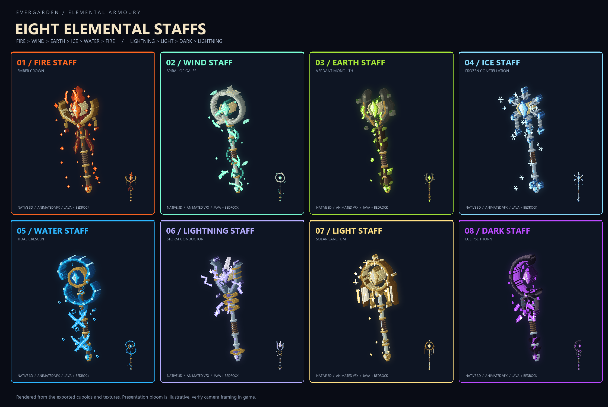
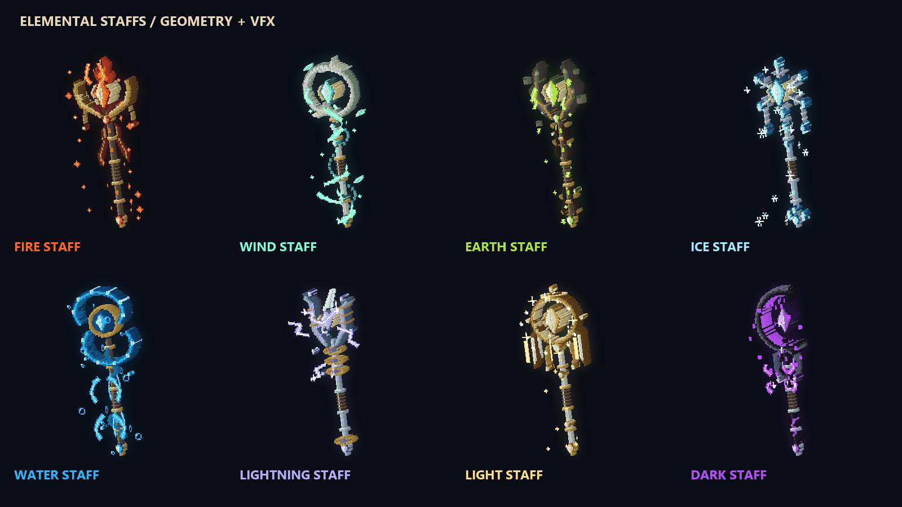

คทาธาตุใหม่ทั้ง 8
Fire → Wind → Earth → Ice → Water → Fire
Lightning → Light → Dark → Lightning


ภาพเรนเดอร์จากโมเดลและเท็กซ์เจอร์ที่ส่งออกจริง พร้อมแสงประกอบ เป็นพรีวิว asset ต้องตรวจตำแหน่งถือบนไคลเอนต์อีกครั้ง รอบนี้ทำโมเดลก่อน ระบบหลายสกิลยังไม่ถูกผูกลงไป
ลองในเกมด้วย /magic staffs หรือ /magic staff give all
Fire

Wind

Earth

Ice

Water

Lightning

Light

Dark